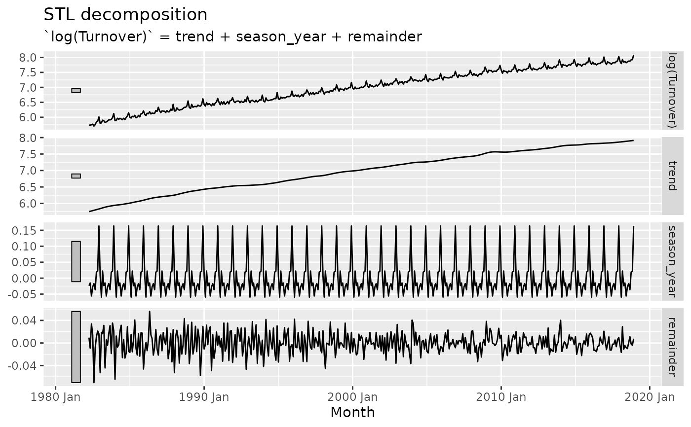

This function allows you to specify a decomposition combination model using
any additive decomposition. It works by first decomposing the data using the
decomposition method provided to dcmp_fn with the given formula. Secondary
models are used to fit each of the components from the resulting
decomposition. These models are specified after the decomposition formula.
All non-seasonal decomposition components must be specified, and any
unspecified seasonal components will be forecasted using seasonal naive.
These component models will be combined according to the decomposition
method, giving a combination model for the response of the decomposition.
decomposition_model(dcmp, ...)
| dcmp | A model definition which supports extracting decomposed |
|---|---|
| ... | Model definitions used to model the components |
if (requireNamespace("fable", quietly = TRUE) && requireNamespace("feasts", quietly = TRUE)) { library(fable) library(feasts) library(tsibble) library(dplyr) vic_food <- tsibbledata::aus_retail %>% filter(State == "Victoria", Industry == "Food retailing") # Identify an appropriate decomposition vic_food %>% model(STL(log(Turnover) ~ season(window = Inf))) %>% components() %>% autoplot() # Use an ARIMA model to seasonally adjusted data, and SNAIVE to season_year # Any model can be used, and seasonal components will default to use SNAIVE. my_dcmp_spec <- decomposition_model( STL(log(Turnover) ~ season(window = Inf)), ETS(season_adjust ~ season("N")), SNAIVE(season_year) ) vic_food %>% model(my_dcmp_spec) %>% forecast(h="5 years") %>% autoplot(vic_food) }